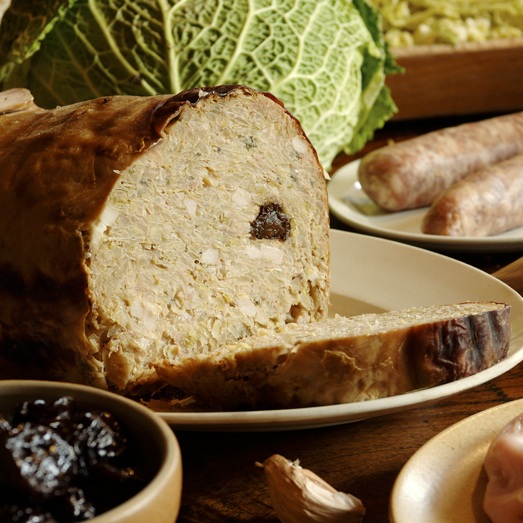

La Maôche, un délicieux plat de terroir d’Ardèche à base de choux, de chair à saucisse, d’oignons… C’est l’un des plats régionaux les plus appréciés. Si vous êtes curieux de découvrir comment préparer cette recette ancestrale et de la servir à vos invités, alors cet article est fait pour vous !
Pour cuisiner la maôche, faut d'abord s'armer des bons ingrédients ! On prend un estomac de porc et on le farcit selon les goûts et les variantes locales. On y met surtout du chou, de la chair à saucisse, et surtout, on n'oublie pas les baies de genièvre pour relever le tout.
Ensuite, faut faire cuire l'estomac farci, soit au bouillon, soit à la vapeur. Une fois qu'il est bien cuit, on peut le passer au four pour lui donner une belle couleur dorée et croustillante.
Et voilà, la maôche est prête à être dégustée ! C'est un plat qui réchauffe le cœur et l'avantage, c'est que les restes se réchauffent facilement. Pour les savourer, coupe une tranche de la taille que tu veux et fais-la cuire à la poêle comme un bon steak
Pour accompagner la maôche, y'a pas mieux que des bons petits côtés traditionnels ! D'abord, tu peux la servir avec des pommes de terre, coupées en morceaux et cuites à la poêle avec un peu d'huile et d'ail. C'est l'accompagnement classique qui va bien avec la maôche.
Si t'as l'âme sucrée, tu peux aussi ajouter des pruneaux. Ces petits joyaux de douceur vont apporter une touche sucrée-salée qui va te faire fondre de plaisir.
Et puis, si t'as envie de légumes, ajoute quelques carottes coupées en rondelles et cuites à la vapeur. C'est sain et ça donne une belle couleur à l'assiette !
Et voilà, avec ces accompagnements, ta maôche va devenir un vrai festin montagnard, de ceux qui réchauffent le cœur et qui mettent du baume à l'âme.
Pour réchauffer la maôche, c'est tout simple! D'abord, sors-la du frigo si elle y était stockée, pour qu'elle revienne à température ambiante.
Ensuite, coupe une tranche de la taille que tu souhaites réchauffer. Mets-la dans une poêle chaude avec un peu d'huile ou de beurre, et fais-la cuire à feu moyen. Fais-la dorer des deux côtés pour lui donner une belle couleur croustillante.
Et voilà, ta maôche est prête à être dégustée à nouveau ! C'est aussi simple que ça, et ça ne prend que quelques minutes.
Alors, pas besoin de se casser la tête pour réchauffer ce délice montagnard.
En Ardèche, on peut déguster la maôche dans de nombreux restaurants et auberges traditionnelles qui mettent en avant la cuisine locale et les spécialités régionales. Les villages et petites villes de la région proposent souvent des établissements où vous pourrez savourer ce plat typique.
A l’auberge Chanéac nous proposons la maôche dans notre menu sur les mois d’hiver (de Novembre à Mars en général)
Les villes comme Aubenas, Privas, Sagnes et Goudoulet, ou encore Les Vans sont des endroits où vous pourrez probablement trouver des restaurants proposant la maôche à leur menu.
Il est également possible que des fêtes locales ou des événements culinaires mettent à l'honneur la maôche dans certains villages et communes d'Ardèche.
N'hésitez pas à vous renseigner auprès des habitants ou des offices de tourisme locaux pour connaître les bonnes adresses où déguster ce plat emblématique de la région.